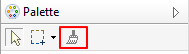

The Format Painter is a tool on the Palette toolbar that allows you to quickly copy the visual formatting of one object and paste it to others in a View. Instead of having to manually apply the font, font colour, text alignment, and other formatting to each new object in a View, you can quickly copy all of the formatting attributes by using one toolbar button.
The Format Painter tool is at the top of the Palette:
The Format Painter tool
To copy and paste formatting in View:
Note that some formatting cannot be copied and pasted from an object to a connection, and vice-versa. You can use the Format Painter tool between different Views. If it is "primed", simply select it from the Palette in another View and paste the formatting to target objects or connections.